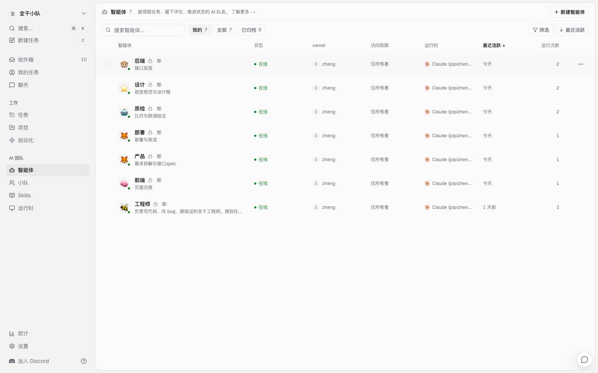
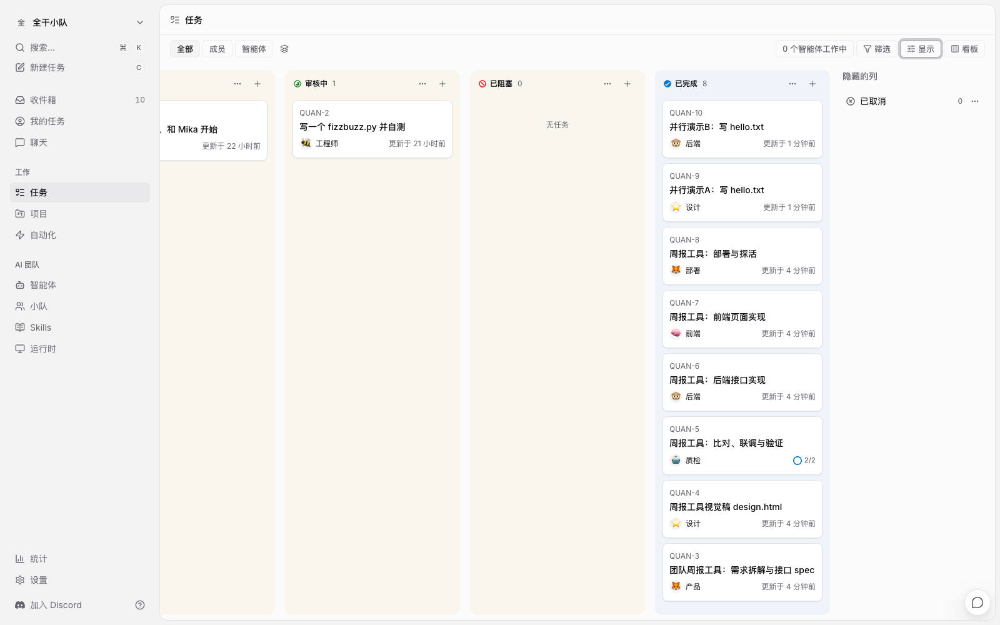
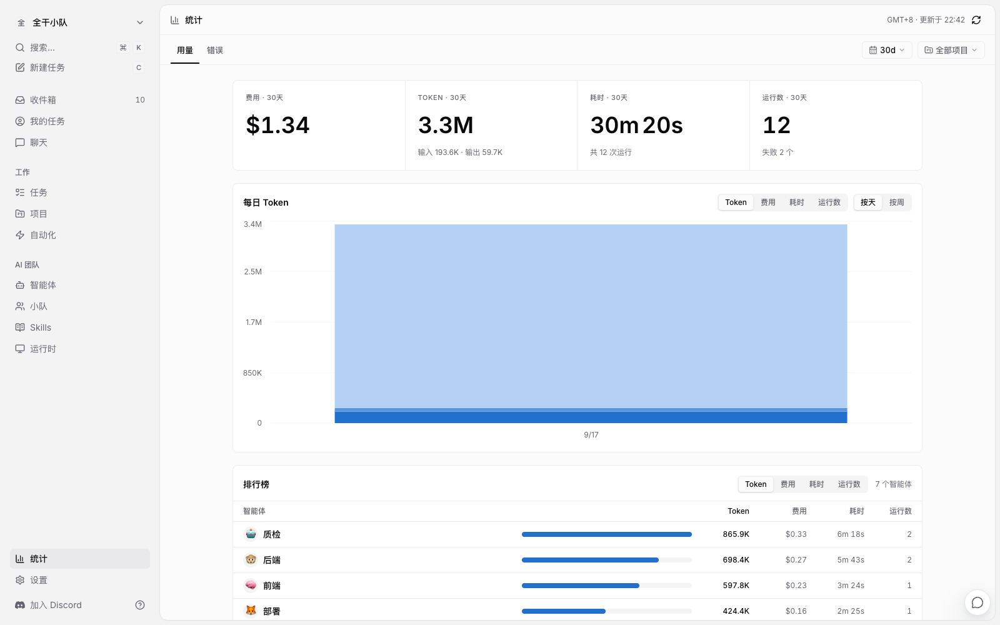

需求一句话：「做一个团队周报工具——成员提交周报（姓名+本周工作+下周计划），能看所有人的提交列表。」
在 Multica 里这不该塞给一个全能 agent，而是拆给六个角色。先给谁，看依赖顺序：谁的产出是别人的输入，谁就先跑：
| 顺序 | 角色 | 职责 | 产出 |
|---|---|---|---|
| 1 | 产品 | 需求拆解 + 接口 spec + 设计要求 | spec.md、design-brief.md |
| 2 | 设计 | 按 brief 出静态视觉稿 | design.html |
| 3a | 后端 | 按 spec 实现 + 自测 + 接口文档 | server.py、api.md |
| 3b | 前端 | 按视觉稿 + spec 还原页面 | index.html |
| 4 | 质检 | api vs spec 比对、联调、UI 还原度 | verify-report.md |
| 5 | 部署 | 部署脚本 + 探活 | deploy.sh |
| 6 | 人 | 验收 | done |
3a 和 3b 互不依赖，可以并行；4 必须等 3a、3b 都完成——这是典型的汇合点，Multica 的 stage 编组就是干这个的。
为什么第一棒必须是产品而不是设计？看输入从哪来：设计的 design-brief 要列出「页面里有哪些区块」，区块清单来自接口能力；后端的实现要对着字段和错误码写。spec 是两份下游产出的共同上游，它没出来，后面全都要猜。分派顺序不是资历问题，是依赖图的拓扑序。
建六个 agent 各写一份「岗位守则」（指令）。通用规则五条，每个角色都带：
1. 动手前先用两三句话说明计划
2. 小步交付，先跑通最小可用再打磨
3. 产出文件放当前工作目录
4. 完成后在任务评论里贴关键产出路径和验证输出，把任务挪到审核中
5. 拿不准的信息自己查任务和文件，不要臆测
角色差异只在职责那一段：产品多一句「起草接口 spec（方法/路径/入参/出参/错误码）」，质检多一句「比对 api.md 与 spec.md 的出入并列清单」。指令就是岗位说明书，写得多细，交付就有多稳。

六个角色智能体就位
● ● ●
需求 issue 指派给产品 agent，描述里只写需求一句话和产出要求。它 4 分钟内交付，工作目录里多出两份文档。spec.md 的骨架：
# 团队周报工具 — 接口规格
背景与目标：成员 30 秒内完成提交，无需登录（一期以姓名标识）
用户故事：3 条（提交 / 查看 / 错误提示）
验收标准：
- [ ] POST /api/reports 可提交，缺字段/超长返回明确错误码
- [ ] GET /api/reports 全量倒序
- [ ] 提交后列表可查到（含提交时间）
- [ ] 统一 JSON 错误响应结构
这里有个跨任务协作的细节：Multica 的每个任务有独立工作目录，任务之间默认不共享文件。我这次是单机实录，直接把上一棒的工作目录绝对路径写进下一棒的任务描述里；真实团队和多机场景应该用项目绑定的 git 仓库来共享，这是平台设计好的正路。
● ● ●
设计 agent 读 design-brief.md，产出单文件 design.html（内联 CSS、无外部依赖），顶部注释标配色、字号、间距。不给它实现职责，它就不碰接口——稿子和实现分离，后面的比对才有基准。
● ● ●
两条任务用 --parent 挂到同一个父任务、--stage 1 编成一组：
# 子任务编组：stage 内全部完成才唤醒父任务
multica issue create --title "周报工具：后端接口实现" \
--assignee 后端 --parent QUAN-5 --stage 1 ...
multica issue create --title "周报工具：前端页面实现" \
--assignee 前端 --parent QUAN-5 --stage 1 ...
后端和前端几乎同时开工——两个 agent 各有各的本机运行时，互不抢资源，各跑各的，5 分钟内先后交货。--stage 的语义来自 CLI 帮助原文：「stage 内的全部子任务完成时，才会唤醒父任务的负责人」。后端用 Python 标准库实现两个接口，启动自测后交货，还主动在 api.md 里自报了 7 条与 spec 的出入（非法 JSON 返回 400、三字段统一 trim、404/405 处理、同秒排序规则……）——每条标注「已披露」。
● ● ●
两棒都到审核中后，轮到质检。这里录到一个真实行为：父任务我建在了 backlog 里，stage 全部完成后它并没有自动发车——backlog 是停车场，这是上一篇文章讲过的发车规则，stage 唤醒也不例外。手动把它移出 backlog，质检 agent 立刻开工。
它的产出是一份 verify-report.md，第一部分就是把后端自报的 7 条出入逐条实测核对：
| 1 | 非法 JSON body | spec 未定义 | 400 INVALID_JSON ✅ | 合理扩展，已披露 |
| 3 | 去首尾空白 | 仅 name 要求 | 三字段统一 trim ✅ | 合理泛化，已披露 |
| 6 | 同秒排序 | spec 未定义 | _seq 次级排序 ✅ | 已披露，设计合理 |
然后是联调。质检自己写了 22 个测试用例逐接口 curl 实测，结果全部通过：正常路径 5/5、校验错误 8/8、Content-Type 2/2、列表行为 3/3、路由方法 4/4，spec 的四条验收标准逐条打勾。但这轮联调最有价值的产出是一个它没被要求做的事：它指出 index.html 是单文件页面、后端不托管静态文件，页面用浏览器打开必然跨源——GET 被拦截、POST 的预检 OPTIONS 直接 501，接口级 22/22 通过，浏览器里却一个请求都发不出去。这正是「接口文档 vs spec 比对」之外，联调环节该干的事：把两块各自正确的东西放在一起，验证它们真的能转。这个问题质检如实记进了报告，留给下一轮迭代开卡修复。
● ● ●
部署 agent 拿到的是后端 workdir 和质检报告的路径。它产出的 deploy-output.txt 记录了一次教科书式部署：
=== 周报服务部署 ===
[deploy] 发现残留 server.pid（探活 000000），清理后重新启动
[deploy] 启动: nohup python3 server.py
[deploy] 已后台启动, PID=5582
[deploy] 探活 GET /api/reports → 200
发现上一环节留下的进程残留，先清理再启动——幂等部署，跑多少遍结果都一样。
● ● ●
看板上八张卡全部躺进「已完成」，质检那张还带着 2/2 的子任务进度环：

终局看板：全流程任务已完成
收件箱里攒了整条流水线的通知，按「需要人拍板 / 需要关注 / 仅告知」分级躺着：

收件箱：流水线全部通知
我核了三样东西：spec 是不是我想要的、质检报告的出入清单是否可接受、部署探活是否 200。然后把六张卡挨个点成 done。全流程只等人这一下。统计页里每次运行的 token 和费用各归各账：
收件箱里那 10 条通知就是流水线的编年史：每棒完成一条「已挪到审核中」，质检的验证报告一条，部署探活一条——多数标「仅告知」，真要人拍板的（验收）才会顶到最上面。
复盘整条流水线，人工介入其实发生了三次：把卡在 backlog 的父任务手动推了一下、把跨源问题记成下一轮的卡、最后点头验收。前两次是编排者的工作，最后一次是验收者的特权——边界清楚，不冤枉谁。

统计页：每个 agent 的费用归因
● ● ●
平台原生的：状态机闸门（backlog 不发车、审核中等验收）、并行编组（小队 + stage 屏障）、触发器（指派/评论/对话/自动化）、PR 关联（分支名带任务号自动挂）、收件箱分级、全程审计（执行日志 + 费用归因）。
要自己拼的：六个 agent 的岗位守则（指令写得好坏直接决定交付质量）；跨任务文件共享——单机可以走路径，团队必须接 git 仓库；部署系统是外部设施，Multica 只负责触发和记录；UI 的视觉终审，截图能看大概，验收要在浏览器里点，官方教程自己都把「反复截图自查」列为要改的习惯。
两个如实交代：这次流水线里 PR 和 code review 环节没走完整——PR 关联需要接 GitHub 仓库，本地实录只能做到「质检审 diff」这一步；stage 屏障唤醒的是父任务负责人，父任务在 backlog 里不会自动发车，编排时要么别把父任务放 backlog，要么接受手动推一下。
成本也算得清：整条流水线 7 次运行，每次的 token 和费用在统计页各归各账（上次单任务运行约 25 万 tokens、$0.10，这次六棒量级相同），哪个 agent 花得多，点开它的账单就知道。耗时上，单棒分钟级，并行段不叠加——墙钟时间约等于最长那一棒。
一条全干流水线，平台出闸门和轨道，编组权在你手里，最后一下留给人类。这套东西今天就能照抄：六条岗位守则、七个 issue、一条 stage 编组命令。
源码地址：github.com/multica-ai/multica（Apache 2.0，支持自托管）